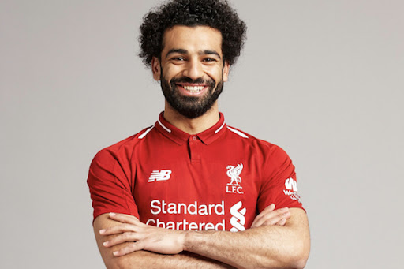
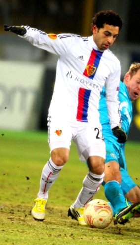
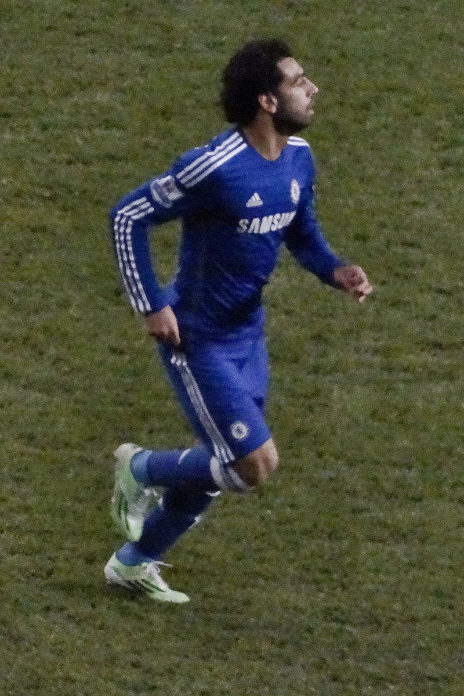
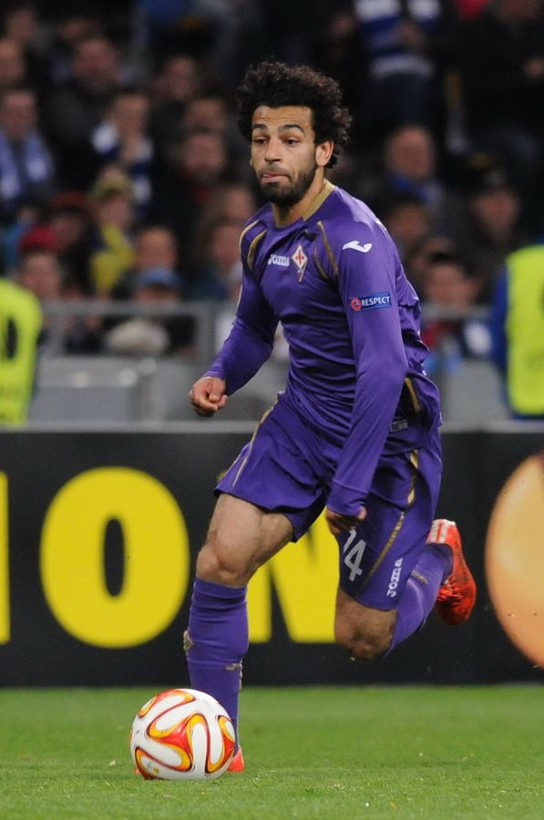

Bienvenue
- Mohamed Salah, de son nom complet Mohamed Salah Ghaly, parfois surnommé Mo Salah, né le 15 juin 1992 à Basyoun (dans le gouvernorat de Gharbeya en Égypte), est un footballeur international égyptien qui évolue au poste d'ailier droit au Liverpool FC.
- Il est considéré actuellement comme l'un des meilleurs joueurs du monde1 et probablement comme le meilleur footballeur égyptien de l'histoire2.
- Il remporte également la Ligue des champions en 2019 en ouvrant le score dès la 2e minute de jeu.
- Membre de l'équipe nationale égyptienne depuis 2011, il a remporté une médaille de bronze en Coupe d'Afrique des nations des moins de 20 ans, il a également participé à la Coupe du monde des moins de 20 ans 2011, aux Jeux olympiques 2012, à la Coupe d’Afrique des nations de la CAF 2017 durant laquelle il a atteint la finale3 ainsi qu'à la Coupe du monde 2018 en Russie.
1-Biographie
Révélation au FC Bâle (2012-2014)
Le 23 juin 2012, Salah inscrit son premier but pour le FC Bâle lors de son premier match. À la fin du match, son entraîneur, Heiko Vogel, déclare que Salah serait un élément essentiel de l'équipe pour faire mal à l'adversaire pendant la saison6. Salah devient rapidement la star du club, tout d'abord en étant à l'origine des trois buts contre le FC Thun7 durant le match de championnat suisse puis en donnant une passe décisive et en inscrivant son premier but lors du match contre Lausanne. Il se classe dans le top 15 des meilleurs jeunes attaquants au monde. En 2012, il est le seul représentant africain au Golden Boy, trophée qui récompense le meilleur espoir de l'année en Europe. Le 27 novembre 2012, il termine en tête des votes sur internet sur plus de 400 000 votes votes. Il est donc le vainqueur du trophée sur Internet bien que le vrai vainqueur soit désigné par une commission officielle8. Il est aussi nommé meilleur espoir de l'année 2012 par la Confédération africaine de football. Le 28 décembre 2012, dans un entretien avec la chaîne de télévision égyptienne Melody Sport, Salah confie qu'il voudrait rejoindre le Borussia Dortmund, mais que le FC Bâle refuserait surement de le vendre, en tant que club jumelé au Bayern Munich, dont les recruteurs l'ont conseillé au FC Bâle. Salah déclare ensuite : « J'aime le style de Dortmund et je pense qu'il est similaire à notre façon de jouer avec l'équipe d'Égypte »9. Le 4 avril 2013, lors du quart de finale aller de Ligue Europa contre Tottenham Hotspur, Salah réalise une performance remarquée. Le portier adverse, Brad Friedel, déclare à la fin du match : « Il était excellent ». Le gardien suisse, Yann Sommer annonce quant à lui : « Tottenham ne savait pas comment l'arrêter ». Salah reçoit même les louanges de son président Bernhard Heusler : « S'il était plus réaliste, je pourrais rajouter un zéro à son prix ! »10. Le 10 avril 2013, la presse italienne fait état d'un intérêt de l'Inter Milan pour Mohamed Salah11.Le 15 avril 2013, c'est Manchester United qui s'intéresse à la star du FC Bâle12. Le 26 avril 2013, le Daily Mail annonce l’intérêt de Tottenham Hotspur et de son entraîneur, André Villas-Boas, pour le jeune joueur13. Le 21 août 2013, lors de la dernière phase de barrage aller de la Ligue des champions 2013-2014, Salah inscrit deux buts et obtient un penalty14. Le 27 août 2013, Salah et Bâle se qualifient pour la C115. Lors du premier match de groupe, alors que Bâle est en difficulté contre Chelsea, Salah inscrit le but de l'égalisation. Son équipe remporte le match sur le score de 1-2. Durant le match retour, Salah marque encore, permet à son équipe de l'emporter 1-0 et de garder espoir en la qualification pour le prochain tour. Début décembre 2013, Salah est élu meilleur joueur du championnat suisse 2012-201316. À l'approche du mercato hivernal, Liverpool décide d'accélérer les négociations pour l'engager17. Fin janvier 2014, Salah est élu meilleur joueur de Super League, joueur préféré du public et est dans l'Équipe-type de la compétition
Échec à Chelsea et rebond à la Fiorentina (2014-2015)
> Le 23 janvier 2014, le club annonce sur son site officiel un accord entre le FC Bâle et Chelsea pour le transfert du joueur19. Avant même l'officialisation de son transfert, José Mourinho se montre très heureux quant à la venue du jeune Égyptien chez les Blues, il déclare notamment : « Il est jeune, rapide, créatif et enthousiaste. Il est le genre de joueur qui est humble sur le terrain, prêt à travailler pour l'équipe. Salah s'est montré ravi à l'idée de rejoindre Chelsea et je suis très heureux de l'avoir avec moi dans l'équipe »20. Le 22 mars 2014, Salah inscrit son premier but en championnat avec Chelsea FC contre Arsenal, lors de la victoire aisée des Blues à Stamford Bridge, qui scelle définitivement le score de ce match (6-0). Le 5 avril lors de sa première titularisation pour Chelsea face à Stoke City, il réalise un très bon match en marquant un but, en délivrant une passe décisive et en provoquant un penalty. À la suite de ses bonnes entrées et de sa très belle prestation, José Mourinho le titularise pour les cinq derniers matchs de la saison. Mohamed Salah avec la Fiorentina en Ligue Europa 2014-2015. Le 2 février 2015, il est prêté jusqu'à la fin de la saison à la Fiorentina dans le cadre du transfert de Juan Cuadrado à Chelsea. Il est buteur lors de sa première titularisation avec la 'Fio' le 12 février 2015 face à Sassuolo. Il récidive la journée suivante face au Torino le 22 février. Quatre jours plus tard, il inscrit de nouveau un but, cette fois en Europa League contre Tottenham Hotspur. Il enchaîne le 1er mars en offrant la victoire face à l'Inter Milan lors de la 25e journée. Le 5 mars 2015, il inscrit son premier doublé avec la Viola lors des demi-finales aller de la Coupe d'Italie au Juventus Stadium. En offrant la victoire (1-2) à son équipe, la Juventus concède sa quatrième défaite à domicile depuis l'inauguration de sa nouvelle enceinte21. Un mois après son arrivée, il a donc été buteur dans trois compétitions différentes et totalise six buts marqués pour sept matchs joués, une belle prestation de la part du jeune Égyptien.
Confirmation à l'AS Roma (2015-2017)
Le 6 août 2015, il est prêté par Chelsea à l'AS Rome pour un prêt payant de 5 millions d'euros avec option d'achat. Alors que la nouvelle saison commence, il fait ses débuts avec le club romain le 22 août face à Hellas Vérone. Le 11 septembre 2015, ACF Fiorentina dépose une plainte auprès de la FIFA, attaquant Chelsea pour une rupture de contrat, mécontent que le joueur soit finalement vendu par Chelsea à l’AS Rome, alors même qu’il ne s’est pas prononcé pour ou contre la levée de l’option d’achat. Or, la Fiorentina estimait qu'elle aurait dû bénéficier d'un nouveau prêt pour la saison 2015-2016. La FIFA rejettera cette plainte. Le 20 septembre 2015, Mohamed Salah marque son premier but face à Sassuolo et aide la Roma à sauver le point du match nul. Les dirigeants romains annoncent vouloir activer l'option d'achat d'un montant estimé à 15 millions d'euros le 1er octobre 201522. Le 25 octobre 2015, l'Égyptien rayonne pour son retour au Stadio Artemio Franchi où il marque un but face à son précédent club ACF Fiorentina. Lors de cette partie, il est sanctionné à quelques minutes de la fin d'un deuxième jaune synonyme de carton rouge. À la fin de la saison, Salah est élu meilleur joueur de l'AS Rome de la saison 2015–2016 en récompense de son incroyable première saison sous les couleurs romaines. Il est le meilleur buteur du club avec 15 buts marqués et un total de 9 passes décisives toutes compétitions confondues. Le transfert du joueur est acté définitivement le 3 août 201623 pour un montant de 15 millions d'euros. Le 6 novembre 2016, Mohamed Salah inscrit un coup du chapeau au Stadio Olimpico qui offre une victoire de 3-0 à la Roma face à Bologna, portant le total de but du joueur en Serie A à 8 en seulement 12 matchs. Dans la continuité de sa première saison, l’Égyptien signe de solides performances qui lui permettent en 31 matchs de championnat de totaliser 15 buts et 11 passes décisives.
2-Records
- Meilleur buteur du pied gauche de l'histoire de la Premier League sur une saison avec 26 buts120
- Meilleur buteur africain de l'histoire en Premier League sur une saison (le premier africain à inscrire plus de 30 buts)121
- Meilleur buteur africain en Ligue des champions sur une saison (11 buts) 122
- But marqué au cours de 24 matchs différents de Premier League sur une saison123
- Meilleur buteur de l'histoire de Liverpool en compétition continentale sur une saison (record partagé avec Roberto Firmino)124
- 2e meilleur buteur de l'histoire de Liverpool sur une saison toutes compétitions confondues (à 3 buts du record absolue détenu par Ian Rush)125
- Premier et seul joueur à avoir été nommé à trois reprises Joueur du mois du Championnat d'Angleterre au cours d'une même saison : novembre 201726, février 2018126 et mars 2018117
- Joueur le plus rapide à atteindre les 50 buts sous les couleurs de Liverpool en seulement 65 matchs.
- Joueur le plus rapide à atteindre les 50 buts sous les couleurs de Liverpool en Premier League en seulement 2 saisons.
- Il devient le buteur le plus rapide en finale de Ligue des champions depuis Paolo Maldini.
- Meilleur buteur étranger en Premier League sous les couleurs de Liverpool.
- Il a marqué plus de 20 buts dans toutes les compétitions dans chacune de ses trois saisons avec Liverpool.
| Année | Matchs | Buts |
|---|---|---|
| 2013 | 23 | 21 |
| 2015 | 25
| |
| 2017 | 24 | 25 |
3-Concact
- Tel : 1345678
- Email :salah.mohamed@gmail.com
- Adresse : 38 rue Kamel Ataturk 1080 Tunis. Adresse Postale : BP 190, 1080 Tunis cedex.
- Site web :www.wikipedia.org